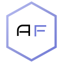

Азия Финтех — Бэк-офисКомпоненты и правила их использования. Кит подключает те же tokens.css и style.css, что и прототип, поэтому вид совпадает с приложением. Разметку каждого блока можно раскрыть под примером. Значения цветов, отступов и типографики собраны автоматически из токенов
Цвета, типографика, отступы, скругления и тени
Основные, второстепенные и опасные действия
Статусы и типы записей
Текстовые поля, переключатели, чекбоксы и сегменты
Вкладки страницы и быстрые табы над таблицей
Строка поиска, чипы фильтров и боковая панель
Список записей с сортировкой, пагинацией и подвалом
Сводные показатели над списком
Карточки, секции и пустые состояния
Шапка списка и шапка карточки
Выпадающие меню, тултипы и меню «⋯»
Модальные окна, подтверждения и тосты
Из чего собирается страница-список и страница-карточка
Единственный источник значений — assets/tokens.css. Компоненты ссылаются на переменные, значения в разметке не пишем. Значения ниже совпадают с этим файлом; при изменении токена обновляйте и эту страницу.
--font-size-xs · 11pxАзия Финтех — бэк-офис 0123456789Подписи, мелкий вспомогательный текст--font-size-sm · 12pxАзия Финтех — бэк-офис 0123456789Ячейки-подписи, подсказки, бейджи--font-size-base · 13pxАзия Финтех — бэк-офис 0123456789Основной текст интерфейса--font-size-md · 14pxАзия Финтех — бэк-офис 0123456789Крупный основной текст, поля--font-size-lg · 16pxАзия Финтех — бэк-офис 0123456789Заголовки секций--font-size-xl · 19pxАзия Финтех — бэк-офис 0123456789Заголовки страниц (моб.)--font-size-xxl · 22pxАзия Финтех — бэк-офис 0123456789Заголовок страницы--font-weight-regular 400 / medium 500 / semibold 600 / bold 700Regular · Medium · Semibold · BoldОсновной шрифт Manrope; логотип — Bruno Ace--space-14px--space-28px--space-312px--space-416px--space-520px--space-624px--space-832px--space-1040px--space-1248pxБейдж — короткий статус или тип. Цвет несёт смысл: зелёный — успех/активно, жёлтый — в процессе или требует внимания, красный — отказ/ошибка, синий — информационный, серый — нейтральный.
<span class="badge badge-success">Активен</span>
<span class="badge badge-warning">Ожидает</span>
<span class="badge badge-danger">Отклонён</span>
<span class="badge badge-info">В обработке</span>
<span class="badge badge-neutral">Физлицо</span>Тип клиента, сеть, валюта — нейтральные бейджи. Статусы — цветные.
Подпись над полем, ошибка под полем красным текстом. Переключатель для мгновенных настроек «вкл/выкл», чекбокс — для выбора из списка.
<label class="filters-field">
<span class="filters-field-label">Название</span>
<input class="address-form-input" type="text" />
</label>
<textarea class="form-textarea" rows="2"></textarea>
<div class="form-error">Текст ошибки</div>Ошибка появляется под полем внутри формы, не в тосте.
<label class="switch-row">
<span class="switch"><input type="checkbox" checked />
<span class="switch-track"><span class="switch-thumb"></span></span></span>
<span class="switch-row-label">Подпись</span>
</label>Один вид переключателя на всё приложение, подпись справа.
<label class="filter-checkbox-item"><input type="checkbox" /><span class="filter-checkbox-box"></span><span>Подпись</span></label>
<div class="filter-seg"><button class="filter-seg-btn is-active">5 мин</button>…</div>Сегмент — выбор одного значения из 2–4.
<span class="filters-field-label">Фамилия<span class="req-star">*</span></span>Звёздочка сразу после подписи, красным. Отмечаются только поля, которые проверяются при сохранении. Слово «обязательно» в подписи не пишем.
<div class="mf-select"><button type="button" class="mf-select-btn"><span class="mf-select-label">Выберите клиента</span>…</button></div>Один вид выбора на всё приложение: закрытая кнопка, по клику попап со строкой поиска и списком. Список сразу не выводится. Попап открывается скриптом приложения (mfSelect), в этой странице показан только триггер.
Поля формы в модалке оборачиваются в modal-form: между полями 16 px, между подписью и полем 4 px. Подпись в модалке без внешнего отступа снизу.
<div class="modal-form">
<label class="filters-field">…</label>
<label class="filters-field">…</label>
</div>Неподтверждённое в спеке раздела пишется как ==текст== и подсвечивается жёлтым (класс docs-todo). Так видно, что нужно уточнить.
Вкладки страницы — cd-subtabs (с иконкой и счётчиком). Быстрые табы над таблицей — quick-tabs, фильтруют список по статусу и показывают число записей.
<div class="cd-tabs-wrap"><div class="cd-subtabs">
<button class="cd-subtab is-active"><span>Роли</span><span class="quick-tab-count">14</span></button>
<button class="cd-subtab"><span>Администраторы</span></button>
</div></div>Активная вкладка — класс is-active.
<div class="quick-tabs">
<button class="quick-tab is-active">Все<span class="quick-tab-count">34</span></button>
<button class="quick-tab">Активные<span class="quick-tab-count">21</span></button>
</div>Первый таб всегда «Все».
Строка над таблицей: поиск, кнопка «Фильтры» (открывает панель справа) и действия списка справа. Выбранные фильтры — чипы под строкой.
<div class="filters-bar-compact">
<div class="filters-search"><svg…/><input type="text" placeholder="Поиск" /></div>
<button class="filter-trigger"><svg…/><span>Фильтры</span><span class="filter-badge">2</span></button>
<span class="filters-bar-end"> …кнопки действий… </span>
</div>
<div class="filter-chips"><span class="filter-chip">Статус: Активные <button class="filter-chip-remove">…</button></span></div>Действия списка (экспорт, добавить) — справа в этой же строке.
Первая колонка — название-ссылка и под ним ID с копированием. Дата — двумя строками (дата и время). Действия строки — только меню «⋯» в последней колонке, без подписи в заголовке. Внизу: «Всего», страницы, размер страницы.
| Тип | Статус | Создан | ||
|---|---|---|---|---|
ID | Физлицо | Активен | 18.09.2616:00 | |
ID | Юрлицо | Ожидает | 17.09.2612:40 |
<div class="card list-card">
<table class="data-table">
<thead><tr><th><button class="th-sort is-active">Пользователь</button></th>…</tr></thead>
<tbody>
<tr><td><div class="identity-cell"><button class="table-link">Имя</button>
<div class="identity-cell-sub"><span class="identity-cell-tag">ID</span><button class="id-copy">…</button></div></div></td>…</tr>
</tbody>
</table>
<div class="table-footer">…пагинация…</div>
</div>Широкая таблица прокручивается внутри .table-scroll.
Единый блок из плиток над списком. Число, подпись и необязательная пометка. Используем только там, где цифры помогают принять решение.
<div class="metrics-grid">
<div class="metric-card"><div class="metric-value">42</div><div class="metric-label">Всего сделок</div></div>
…
</div>На телефоне плитки идут по две в ряд.
Слева на странице — плоские секции без рамок (profile-flat-section), справа — карточки (card). Поля — сеткой «подпись / значение».
<div class="profile-flat-block">
<div class="profile-flat-section">
<div class="profile-flat-section-head"><span class="detail-section-title">Заголовок</span></div>
<div class="profile-flat-section-desc">Описание блока</div>
<div class="profile-fields profile-fields-grid profile-fields-grid-3">
<div class="profile-field"><span class="profile-field-label">Поле</span><span class="profile-field-value">Значение</span></div>
</div>
</div>
</div>Подзаголовок секции — серым, без точки в конце.
<div class="card collapsible-card">
<button class="collapsible-card-head"><span class="detail-section-title">Заголовок</span><span class="collapsible-card-chevron">…</span></button>
<div class="collapsible-card-body">…</div>
</div>Свёрнутое состояние — класс is-collapsed на карточке.
<div class="card client-block-card">
<div class="detail-section-title">Причина</div>
<ul class="block-reasons-list"><li>Текст</li></ul>
</div>Используем для причин блокировки, отказов, предупреждений.
Голубая шапка со скруглением сверху — на всех страницах. У списка — заголовок и подзаголовок; у карточки — стрелка «назад», название, статусы, главное действие и меню «⋯».
Обмены валют между счетами клиентов
<div class="list-hero">
<div class="page-header">
<div class="page-header-main"><h1 class="page-title">Название</h1><p class="page-subtitle">Пояснение раздела</p></div>
</div>
</div>Подзаголовок — без точки в конце. Кнопки действий — в строке поиска, не в шапке (исключение — меню «⋯» и «Экспорт» на страницах-исключениях).
<div class="card client-detail-header cd-hero">
<button class="client-detail-back">…</button>
<div class="client-detail-header-main">
<div class="client-detail-title-row"><span class="page-title">Название</span><span class="badge …">Статус</span></div>
<div class="client-detail-subtitle">…</div>
</div>
<div class="pd-header-tools"> главное действие + меню «⋯» </div>
</div>Не больше одной главной кнопки, остальное — в меню «⋯».
Формы и подтверждения — только модальные окна. Результат действия — тост сверху справа. Пустой результат — пустое состояние.
openModal({ title, bodyHtml, footerHtml, width: 480, onMount })
openConfirmModal({ title, text, confirmLabel, cancelLabel, danger, onConfirm })
showToast("Сохранено", { type: "success" | "error" | "info" })Кнопки в подвале: слева «Отмена», справа главное действие. Опасное — btn-danger.
<div class="empty-state empty-state-centered">
<img class="empty-state-logo" src="logo-icon.svg" alt="" />
<div class="empty-state-text-group"><div class="empty-state-title">Заголовок</div><div class="empty-state-text">Пояснение</div></div>
<button class="btn-secondary">Действие</button>
</div>Всегда предлагаем действие: сбросить фильтр или создать запись.
Раздел, который нужен редко и требует осторожности (сейчас «Системные настройки»), закрепляется внизу сайдбара отдельным блоком sidebar-nav-pinned: сверху линия, не прокручивается вместе с основным меню. Пункты внутри такие же, как в основном меню.
Экраны собираются из тех же блоков в одном порядке — так все разделы выглядят одинаково.
list-hero с заголовком и подзаголовкомmetrics-gridcard list-card: быстрые табы, строка поиска и фильтров с действиями справа, чипы фильтров, таблица, подвал с пагинациейcd-hero: назад, название, статусы, главное действие, меню «⋯» (в нём «Выгрузить карточку (PDF)»)profile-flat-block: плоские секции с полямиcard): связанные записи, комментарии, хронологияДД.ММ.ГГ и время на второй строке